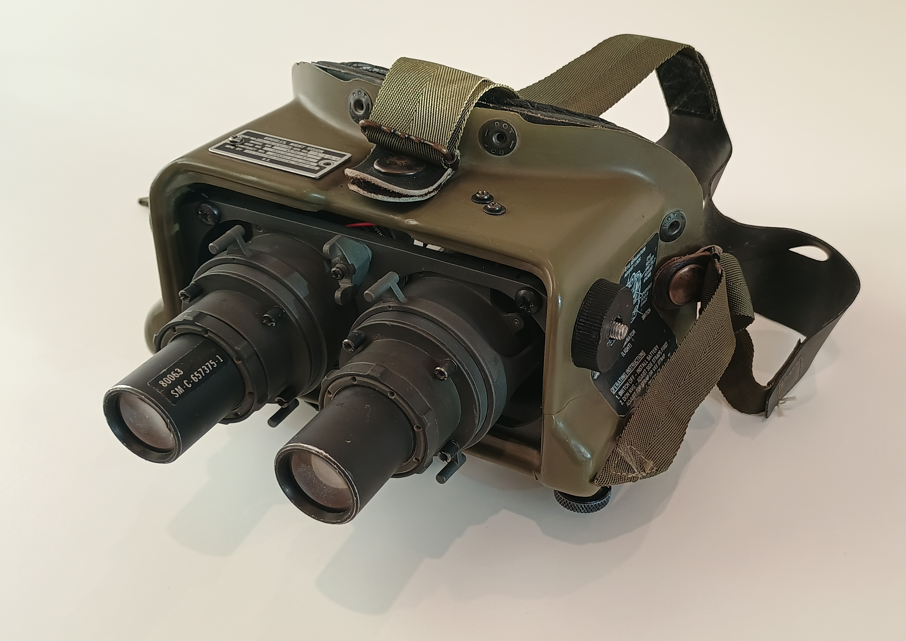
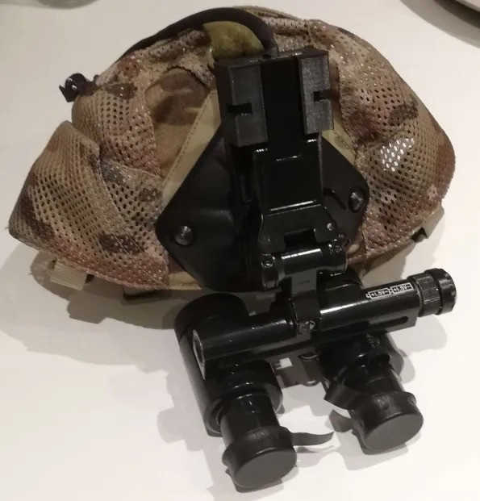
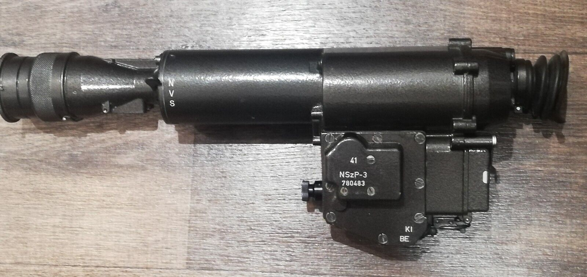
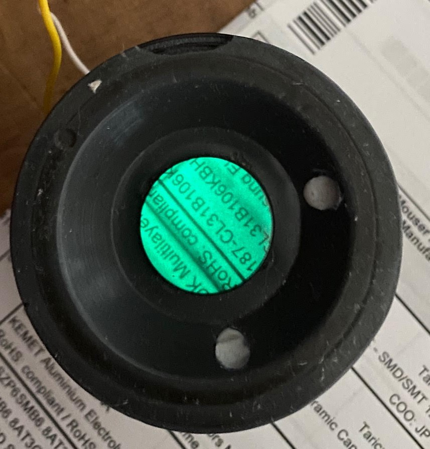
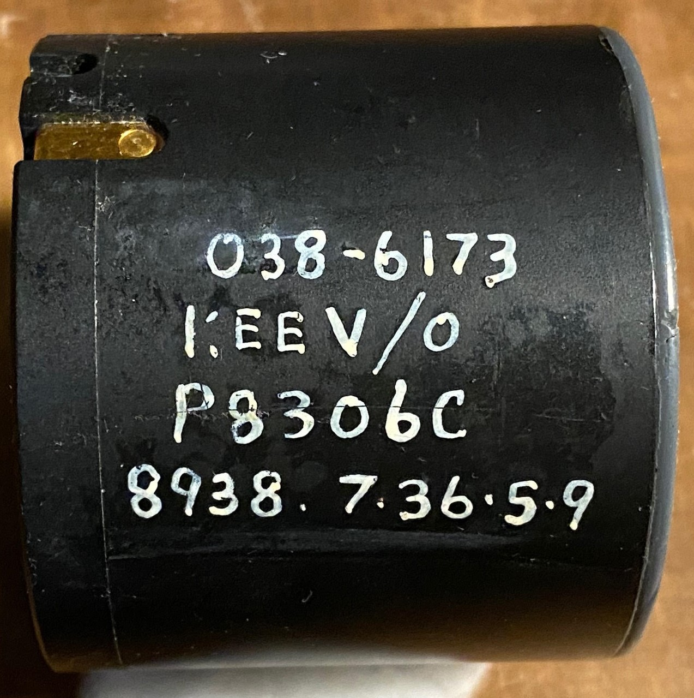
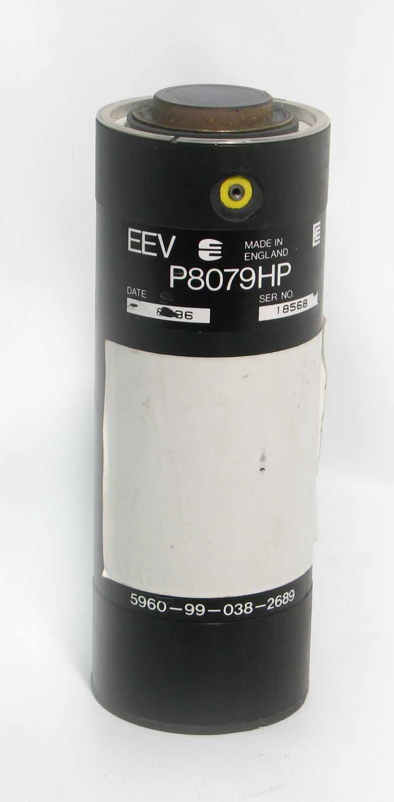
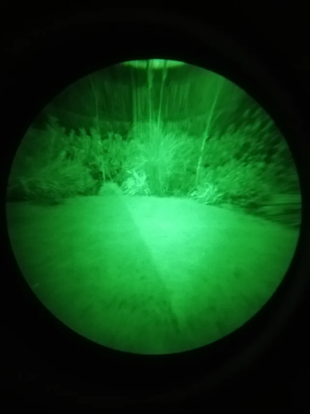

night vision stuff

This page contains several night vision devices I have had in my collection over the past few years.
AN/PVS-14

reliable. proven. classic. not much more to say, it's the gold standard for a reason.
AN/PVS-5A


America's first head worn gen 2 NVD. Completely obsolete, completely cool.
GEO-NVG1


an export version of a russian gen 3 aviation binocular device
NSZP-3


it's old, its heavy, it's bulky, it's a hungarian clone of a polish soviet - era nvd. gorgeous!
P8306C


the first gen 2 tube I owned <3
P8079HP


This old tube is pretty cool, pretty heavy, and pretty big
Baigish 20a
gen 1 ep33 goggles from russia, with a unique head mounting system. its pretty spooky if you ask me.
Cyclop 1
A big handheld unit with a """unique""" illuminator and a useful lens
 related adapters + nvg parts I sell
related adapters + nvg parts I sell